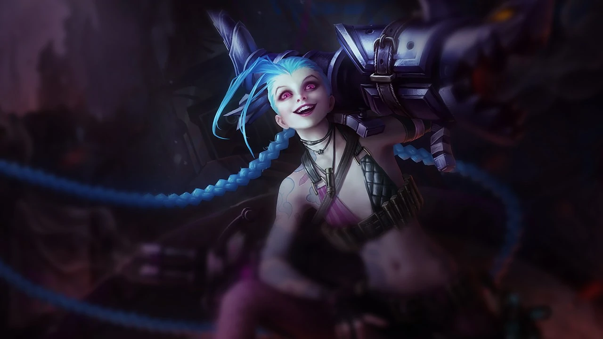

5.
Tristana
Un champion molto semplice che imparai ad usare nelle mie prime partite d'approccio al ruolo e che mi permise di imparare diverse meccaniche fondamentali; grazie a spell come la 'W' si ha sempre un modo per riposizionarsi e/o continuare a fightare nemici che scappano, e con la passiva della 'E' ,una volta capito il funzionamento, viene molto semplice anche farmare
Fondamentale
4.
Draven
Campione con cui arrivai per la prima volta Gold 3 anni fa, estremamente difficile capire la meccanica sulle asce, ma una volta capita ti permette di andare avanti rispetto agli avversari e carryare da solo la partita
Impattante
3.
Xayah
AD carry che uscì assieme a Rakan, iniziammo a giocarli entrambi con un mio amico in bot, fu amore a prima vista, la meccanica delle piume lasciate dietro i nemici attirabili a se con la 'E' spesso frega gli avversari con danni inaspettati e un 'CC' veramente forte
Rivoluzionaria
2.
Kai'sa
Champ che quando uscì non mi disse nulla, anzi, vedendo delle meccaniche diverse rispetto ad altri ADC che giocavo mi spinse quasi ad odiarlo; poi la provai la prima volta e mi fece impazzire per la forte versalità e uno stile di gioco che mi appartiene
Versatile

1.
Jinx
Pochissimo da dire, AD carry da late game che rispecchia al pieno il mio stile di gioco, oltre che adorare la sua lore, con cui mi diverto ogni singola volta che la gioco
Perfetta
